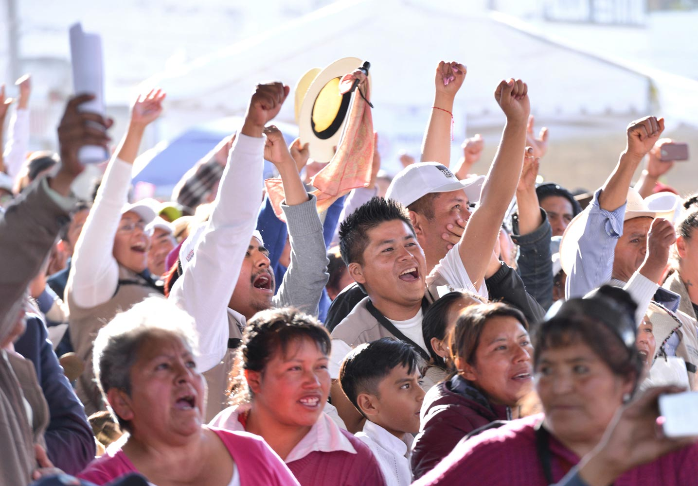

Construyendo bienestar
Tras un largo proceso de lucha y resistencia encabezado por mujeres y hombres de todas las clases sociales, el 1 de diciembre de 2018 inició la Cuarta Transformación de la vida pública de México, cuyo objetivo más importante es construir y garantizar un entorno de bienestar para todas y todos.
Desde inicios de la década de 1980, a raíz de la crisis económica de 1973, los grandes capitales y sus ideólogos, apoyados por varios gobiernos occidentales, impusieron el falso discurso de que al mantener la salud, la educación, los mecanismos de redistribución, etcétera en manos del Estado se generaban déficits que llevarían a los países a la bancarrota, por lo que promovieron su desmantelamiento.
En el caso de México, tras las crisis de 1976 y 1982, los gobernantes de entonces adoptaron medidas de corte neoliberal que vieron su máximo auge en el sexenio de Carlos Salinas de Gortari (1988-1994), y que continuaron sin tregua hasta finales del 2018. Los resultados son a todas luces visibles: una herencia de pobreza multiplicada, desigualdad social, marginación, corrupción, deterioro institucional, pérdida de soberanía, inseguridad, violencia.
Durante ese periodo de 36 años se asentó la falaz afirmación de que el Estado no debía promover el desarrollo ni procurar la distribución del ingreso, sino limitarse a crear las condiciones para que los inversionistas hicieran negocios. No obstante, el Estado es esencial para la construcción del bienestar de la población y que, en un país como el nuestro con tantas desigualdades, resulta indispensable para la supervivencia de las mayorías.
Sí, es labor del Estado alentar el desarrollo social impulsando el crecimiento económico y la creación de empleos que devengan en la mejora de los ingresos de la población, pues de esta manera habrá mejores condiciones que garanticen una mejor calidad de vida.
Sin embargo, en tanto se logra alcanzar ese nivel de desarrollo, el Estado debe garantizar demandas básicas para el bienestar de manera igualitaria y fraterna que garanticen que las personas pobres, las olvidadas y desplazadas por los neoliberales, tengan protección ante la desigualdad, desventajas y otras calamidades.
La iniciativa de un Estado de bienestar no es nueva ni en México ni en el mundo; en nuestro caso, los artículos 3, 27 y 123 de la Constitución de 1917, entre otros, sentaron las bases para la creación de políticas públicas que beneficiaron, principalmente, a las personas desposeídas. Posteriormente, como ya se ha dicho, esta visión fue relegada con el desmantelamiento del sector público, en aras de beneficiar a un pequeño grupo de personas para hacer negocios.
Hoy, con el Gobierno de la Cuarta Transformación, encabezada por el Presidente Andrés Manuel López Obrador, se está recuperando el papel central del Estado, bajo la visión de que el crecimiento económico y los incrementos en la productividad y la competitividad no tienen sentido como objetivos en sí mismos, sino que son medios para lograr un objetivo superior: el bienestar general de la población, en el cual se garantizan los derechos a la alimentación, al trabajo, la salud, la educación, la cultura, la vivienda y la seguridad social.
Es así, que se han creado los Programas para el Bienestar, algunos de ellos consagrados incluso en la Constitución como derechos, para salvaguardar la vida de las personas más pobres, desfavorecidas o desplazadas en el pasado reciente.
Por ejemplo, a través de la Pensión para el Bienestar de las Personas Adultas Mayores se otorga un apoyo económico universal de manera bimestral, a mujeres y hombres de 65 años o más de edad, garantizándoles una vejez digna y plena.
Con la Pensión para el Bienestar de las Personas con Discapacidad se apoya a niñas, niños y jóvenes con discapacidad permanente de hasta 29 años de edad, así como a personas en esta condición de comunidades indígenas desde los cero hasta los 64 años. De esta forma, se busca eliminar la marginación, discriminación y racismo en contra de todas y todos ellos.
Por otra parte, el Programa Nacional de Becas para el Bienestar Benito Juárez es un apoyo bimestral para los millones de estudiantes de escuelas públicas que estén en condiciones de pobreza de todos los niveles educativos.
Otro timbre de orgullo es el programa Jóvenes Construyendo el Futuro, con el que personas de entre 18 y 29 años de edad que no se encuentran estudiando o trabajando reciben capacitación laboral en empresas, instituciones públicas y organizaciones sociales en las que desarrollan sus habilidades que les permitan insertarse en el campo laboral. Durante un año, el Gobierno de México les otorga un apoyo mensual más seguro médico del IMSS. Este programa ha permitido combatir la discriminación contra estos jóvenes que antes eran llamados de manera despectiva “ninis”, así como evitar que sean reclutados por grupos criminales.
Al igual que estos cuatro programas, también se impulsan otros como La Escuela es Nuestra, el Programa de Niñas y Niños Hijos de Madres Trabajadoras y Sembrando Vida, en los que se antepone el interés público y no el de los requerimientos privados.
En la Cuarta Transformación, el Estado no es gestor de “oportunidades” -cuestiones azarosas y temporales- que es como se presentó de manera explícita la política social del régimen neoliberal. El Estado es y será garante de derechos, los cuales son irrenunciables, universales y de cumplimiento obligatorio.